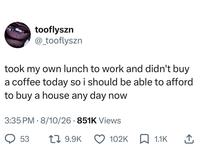

0


0

Spotify will begin labeling AI-generated artist identities with "AI Persona" badges and exclude their music from editorial, algorithmic, and personalized recommendations unless users explicitly follow them. The company says the designation applies to whether an artist profile represents a real person, not whether AI was used to make the music, and will allow appeals for mislabeling. TechCrunch reports: While Spotify will allow artists to identify themselves as AI Personas, the company says it won't rely on self-disclosure alone. It will also review artist profiles and identify those where the artist's name and imagery appear to represent photorealistic AI-generated identities. Spotify said it will begin its review with profiles that have met pre-defined audience thresholds to ensure the more listened-to artists are covered first.
Once labeled, the AI Persona badges will appear on the artist's profile in the banner and the About section, in Search, and on track rows across playlists. By default, Spotify won't include AI Personas in its editorial or algorithmic recommendations, nor will it add AI Personas' music to users' personalized recommendations -- unless they happen to follow an AI Persona. Only users can choose to follow an artist, so it's an explicit signal that the user wants to hear more music from that person or group. Spotify wrote in its announcement that, "while we believe all artists have creative choice in determining how they present themselves, Spotify's programming is focused on elevating music from authentic artists building careers in music."
"Although there's a broad spectrum in how artists use AI as a creative tool, the question of whether a profile represents an actual human is one where Spotify can help make a clear determination. This badge is about the artist's public identity, not about how the music was made," the company said.
Read more of this story at Slashdot.
Ancient Slashdot reader Alain Williams shares a report from The Guardian: Mark Zuckerberg has faced questions over why a small cruise ship in south-east Alaska rescued a stranded skiff and its crew when his 387ft superyacht had been closer. The Silicon Valley billionaire's yacht, worth a reported $300 million, is said to have "repeatedly" declined to assist when a nearby boat called for help last week. Zuckerberg, CEO of Facebook and Instagram owner Meta Platforms, was not on board at the time, a spokesperson told Forbes.
When a nearby 21ft skiff ran out of fuel between Petersburg and Juneau, the Alaska Beacon reported operators of a cruise ship that was further away than Zuckerberg's yacht came to the rescue. "I'm on a small-ship Alaska cruise with my son," a passenger on the UnCruise Adventures ship Wilderness Legacy posted on Bluesky. "Our boat rescued a stranded vessel last night and apparently we did that after the Coast Guard radioed Mark Zuckerberg's yacht -- which was closer -- and they repeatedly refused to respond. (There was near unanimous booing when the captain announced this)." A spokesperson for Zuckerberg told Forbes that the yacht crew had been operating on a different radio channel and "the assist was already under way" by the time they discovered the broadcast.
Read more of this story at Slashdot.
An anonymous reader quotes a report from TechCrunch: Ceva Logistics, one of the world's largest shipping and logistics giants, has been hacked. Several companies that rely on Ceva for shipping their products to their customers say that their personal information was also stolen in the breach. The cyberattack on Ceva is affecting at least eight warehouses across Europe used for shipping goods across the continent, the company told TechCrunch. Industry news site FreightWaves reports that the hack began on July 29 and is causing shipping delays for many of the goods in affected warehouses.
Ceva is a France-headquartered shipping and logistics giant that companies around the world rely on to deliver their goods from their assembly lines to customer homes. The company, which brought in $18.3 billion in revenue in 2025, has over a thousand warehouses across the world. [...] The hack at Ceva also resulted in a data breach, affecting a large amount of personal information belonging to retail customers that Ceva relies on for delivering goods to people's home addresses. Several companies reported that hackers took their customers' names, home addresses, phone numbers, and email addresses used to place their orders from Ceva's systems.
Dutch online retail giant Bol said on its website that hackers gained access to systems of its warehousing partner, Ceva, and warned that their customers' data may have been taken. Bol also said that it expects delays and some customer orders to be canceled as a result of the incident. De Bijenkorf, another Dutch luxury retailer, similarly confirmed order delays following the theft of its customers' data, per local media. Football club Ajax, banking giant ING, and eyeglass maker Ace & Tate also reported that customers' shipping information was affected. Video game giant Valve told customers that it learned on August 7 that data was taken from Ceva's systems, and alerted customers who recently bought its Steam hardware that they had personal information taken in the incident. Valve said in its note to customers, posted to Reddit, that Ceva stores their shipping and delivery information for 90 days following their order. So far, Ceva says the agency has received data breach reports from 10 organizations in relation to the incident.
Read more of this story at Slashdot.
Valve is continuing to broaden SteamOS support beyond its own hardware, with the latest beta adding "initial gamepad support" for a few recent gaming handhelds and improving compatibility for a few others. Ars Technica reports: Those newly supported handhelds include MSI's Claw 8 EX AI+, the extremely expensive, extremely powerful handheld built around Intel's Arc G3 processor that launched this summer. While SteamOS has long included beta support for "other AMD powered handhelds," Valve has only recently been working on offering compatibility with Intel-based handhelds like the MSI Claw line. This weekend's update suggests the company hasn't abandoned those efforts and that Intel chips aren't being left out of the SteamOS conversation.
SteamOS 3.8.25 also newly supports the controllers built into Ayaneo's Android-focused Pocket S2 and the more recently released Windows-based Konkr Fit. Valve also says the new OS offers "improved support" for older MSI Claw devices and the OneXPlayer line of portable gaming PCs. This weekend's update follows June's SteamOS 3.8 update, which stressed "improved compatibility with recent Intel and AMD platforms." That update specifically called out improved controller support on handhelds from the likes of GPD Win, Anbernic, and OrangePi, as well as improvements for various Lenovo Legion Go, MSI Claw, and OneXPlayer devices. The report notes that the new SteamOS update also updates the Linux driver powering the new Steam Controller, "allowing it to work with 'native controller applications' even when Steam is not running."
Read more of this story at Slashdot.
Meta has released Muse Glimmer, a slimmed-down open-weight AI model designed to run locally on a single GPU for agent tasks such as scheduling, file management, coding, and tool use. The release is based on Meta's closed Muse Spark 1.2 model and appears to be aimed at attracting developers who want capable AI agents without relying entirely on cloud-hosted services. Engadget reports: Facebook said that it's making the "weights" that AI systems use to choose responses available to everyone on Hugging Face along with developer documentation. The download is available for free, and users can run the model on their own PCs. The company noted that optimized integrations will land on llama.cpp and other sites, "so you can go from download to working agent in minutes."
The model is powerful for its size, according to Meta, with the "strong success rates" on benchmarks like DeepSearch QA, MCP-Atlas and SWE-Bench (which evaluates its ability write and debug code). It also supports reliable tool use, multi-step reasoning, failure recovery, multimodal input and scaffold compatibility for work with OpenClaw and other agent orchestrators. It was trained on data from over 100 languages, the company added. "Rather than centralizing superintelligence, we should distribute it widely and give every person the ability to direct it," CEO Mark Zuckerberg said in an essay accompanying Muse Glimmer's release. "This has the potential to begin a new era of personal empowerment where individuals can use this powerful new capability to reach their full potential, pursue their interests, and improve their lives and the world more than ever before."
Read more of this story at Slashdot.
Paramount CEO David Ellison is threatening to begin moving the studio out of California on October 1 if state Attorney General Rob Bonta refuses to enter settlement talks over the proposed Paramount-Warner Bros. Discovery merger. The company would reportedly move its Los Angeles headquarters first and shift most studio jobs out of the state over five years, with Georgia, Texas, and Tennessee under consideration. Variety reports: Ellison's threat to relocate Paramount in retaliation for California's Bonta leading the charge to kill the WBD deal -- a move that would include much of its studio operations, over time -- was first reported by industry newsletter Puck. In response, Bonta called Ellison's planned exit from the state an "attempt to blackmail the state into letting an illegal deal through."
"Paramount has lost the plot as it continues to lose in court," the attorney general wrote in a post on X. "It didn't work the first time -- on the eve of our July lawsuit -- and it won't work this time." Bonta has not publicly said what concessions from Paramount-WBD he would consider acceptable enough to take the lawsuit off the table. But the Democratic attorney general has said any remedies would need to be "structural" (i.e., divestments) rather than "behavioral" (e.g., imposing certain production quotas).
Oct. 1 is when Paramount will begin accruing a "ticking fee" payable to Warner Bros. Discovery shareholders of $7 million per day. The trial in the state AGs' lawsuit is scheduled to start March 2, 2027, roughly five months after that, so Paramount would be on the hook to pay around $1.2 billion to WBD shareholders by the time the trial is scheduled to conclude. (Paramount's ticking-fee payments to WBD are not due until the deal closes.) At the Aug. 5 meeting on Paramount's lot, Ellison told his 12-member senior executive team he expects Paramount to prevail in the antitrust case against the states. However, he also said that if Bonta balks at talks, Paramount will start packing up and moving out of the Golden State in less than two months.
Read more of this story at Slashdot.
Starting today, unsolicited telemarking calls are banned in France unless consumers explicitly consent to them. Companies that violate the law can face fines of up to 375,000 euros per call, though existing customers can still be contacted with related offers. Le Monde reports: The government says the law is a response to years of consumer complaints. Authorities estimate that about three-quarters of people in France receive at least one unsolicited sales call every week, and many receive more. In 2024, 11 consumer organizations issued a joint call for a ban, denouncing "relentless harassment of consumers through countless unwanted telemarketing calls to both landlines and mobile phones -- an intrusion that has become a regular part of their daily lives."
Now, "businesses are prohibited from contacting consumers without their prior consent," said Alice Vilcot, chief of staff at the Directorate-General for Competition, Consumer Affairs and Prevention of Fraud. "That consent can be withdrawn at any time." [...] Previously in France, people who wanted to avoid marketing calls had to register their number with a government-run service, but consumer groups said some call centers ignored the list. Vilcot noted that an Ireland-based company was fined 6 million euros ($6.9 million) last year for violating France's previous telemarketing rules by calling people on the no-call list.
Read more of this story at Slashdot.
Longtime Slashdot reader DF5JT writes: On July 26, I posted a single announcement in r/backgammon: GNU Backgammon for Android, GPLv3, the first standalone backgammon engine on F-Droid. Reddit's spam filter removed the post and permanently banned my 11-year, 30,000-karma account -- the result is publicly visible at reddit.com/user/OE1FEU. To this day, Reddit has given no reason whatsoever, although Article 17 of the EU's Digital Services Act makes a statement of reasons mandatory. The only appeal channel is a 250-character web form that sends no confirmation and has never been answered; Reddit's own help text admits: "you may not have received a message to your inbox." A GDPR export of 11 years of data came to 7.2 MB; every post was truncated after a few lines, with zero data about the ban decision.
So I spent one day escalating through every mechanism the EU provides: certified out-of-court dispute settlement at Austria's RTR, complaints with the Austrian and Dutch Digital Services Coordinators, the data protection authority (citing the ECJ's SCHUFA ruling on automated decisions), noyb, and Austria's consumer association. Bonus finding: the European Commission's DSA Transparency Database contains 14,067 Reddit statements of reasons for that week -- none for my ban -- and the Commission's own feedback form limits reports to 500 characters and crashed with a 500 Server Error. Is the DSA enforceable for ordinary users, or just paperwork?
Read more of this story at Slashdot.
alternative_right shares a report from 404 Media: Robotics companies promise that video-camera-toting security robots can deter and detect crime. But many companies are rethinking the approach after a trail of canceled contracts and questions about whether the artificial intelligence-powered bots are meeting the needs of businesses and local governments. Proof News found evidence of at least 21 security robot deployments since 2015. We contacted contract holders and combed news articles and determined that at least 13 of those programs have ended. Silicon Valley-based Knightscope secured the most security robot contracts, according to Proof's analysis, and also suffered the bulk of cancellations.
For example, New York City's then-Mayor Eric Adams installed a Knightscope robot on the overnight shift at the Times Square subway station, but the program was scrapped when the pilot expired in 2024. City leaders did not respond to Proof News' questions about why the robot wasn't renewed. By the end of its assignment, it was reportedly gathering dust in an empty storefront. Outside Columbus, Ohio, the city of Dublin pulled the plug on a Knightscope robot in May, ending its two-year pilot program after less than 10 months. The city enlisted the robot, dubbed DubBot, to patrol a downtown park, but city spokeswoman Robyn Gray said it "did not fully meet our operational needs," and failed to identify any criminal incidents or lead to any tickets or arrests.
[...] Seeking a new path forward in the security industry, Knightscope CEO William Santana Li said the company is forging a new model, combining its robots and AI-powered software with another key ingredient: human security guards. Knightscope announced it purchased Event Risk LLC, a national security guard firm, earlier this year. Knightscope has incurred net losses since inception in 2013, according to its most recent quarterly filing with the U.S. Securities and Exchange Commission, and is $273 million in debt. Knightscope hopes its pivot to incorporate people will give it a greater share of the physical security market -- which the company believes is worth an estimated $230 billion annually. Li declined to answer questions about the disbanded programs, but said in an email, "Technology cannot do everything -- and neither can people -- but the combination can be very powerful."
Read more of this story at Slashdot.
A routine security assessment found that cameras aboard Royal Navy Kraken unmanned surface vessels were sending "heartbeat" signals to an IP address in China. "A thorough investigation found no evidence of MoD data or systems being accessed, compromised or transmitted externally," said a Ministry of Defense spokesperson. "Our assurance and testing processes are designed to identify and address potential vulnerabilities early, and we continue to undertake routine security activity across our systems and equipment." The Register reports: According to reports, the talkative components were cameras sourced by Kraken from a third-party supplier. The incident raises questions about supply chains, audits, and cybersecurity in the British armed forces. The spokesperson said: "The first duty of government is national security, and we take the security of our equipment, networks, and data extremely seriously."
Read more of this story at Slashdot.
Nvidia is working with Wall Street heavyweights on a potential $500 billion financing package for AI infrastructure (source paywalled; alternative source). The consortium includes BlackRock's Global Infrastructure Partners, Brookfield Asset Management, Goldman Sachs and KKR. The Financial Times reports: The partnership underscores Nvidia's growing efforts to raise capital for itself and its clients to continue assembling the chips, power production and data centres at the heart of the AI boom. The $5.25 trillion company has positioned itself at the centre of the AI boom, providing chips, infrastructure and software to a wide array of partners developing the technology. Nvidia's graphics processing units, or GPUs, underpin most of the leading US AI models available today.
[...] The biggest cloud-computing companies, including Meta, Oracle, Microsoft, Alphabet and Amazon, have dramatically increased their spending on AI infrastructure as they look to win the race to dominate the emerging technology. Morgan Stanley projects so-called hyperscalers will spend $3.5 trillion between 2026 and 2028. That need for capital has forced technology groups to tap every source of cash they can find, including public equity, investment-grade and high-yield bonds, securitized debt, private credit and project finance markets. "[The] sheer size of the AI infrastructure build-out is unprecedented," Jim Zelter, president of Apollo, said on an earnings call earlier this month. "More than $8 trillion of capital is expected to be invested, a staggering sum. We see an enormous opportunity for private capital to finance a portion of this along with public capital."
Read more of this story at Slashdot.
Taiwan deliberately throttled mobile internet across the Taichung area during its annual Han Kuang war games, "simulating communication disruption in the event of a Chinese attack or natural disaster," reports Reuters. The drill accompanied air-raid exercises and military rehearsals aimed at defending strategically important areas such as the Penghu Islands. From the report: Democratically governed Taiwan, which China claims as its own territory, has long lived with the threat of a Chinese invasion and holds air raid drills along with its war games every year, clearing people from the streets for 30 minutes. During the internet "throttling" drill, centered on Monday on the major central metropolis of Taichung, only basic mobile phone services worked, though other functions including ATMs, traffic signals, landlines and fixed internet services were not affected.
Air raid sirens rang out in Taichung "and people cleared the streets from 2:30 p.m. (0630 GMT) as the government sent simultaneous text messages in Chinese and English telling mobile phone users of "simulated air attacks on communication infrastructure." The government had widely flagged the drill ahead of time, including posting details on social media, and most people Reuters spoke to at the Taichung train station were prepared. [...] The same exercise will be repeated on Thursday in northern Taiwan, including the capital Taipei.
Read more of this story at Slashdot.
An anonymous reader quotes a report from the BBC: England is on track to become one of the first countries in the world to eliminate hepatitis C, a dangerous virus that attacks the liver, figures show. The target of treating 80% of all known cases has already been met, and deaths from the virus have fallen by 36% in the last decade, just short of what is needed by 2030. Taking antiviral tablets for 8 to 12 weeks can cure more than 95% of cases. Initiatives including A&E blood tests, GP registration testing and free at-home tests have helped to find people who were previously undiagnosed, says NHS England.
NHS England says that since 2015, more than 100,000 people have been diagnosed and treated for hepatitis C, meaning the country is already meeting that target. Another goal -- a 65% reduction in hepatitis C-related mortality compared with 2015 levels -- has yet to be met, but might be before the 2030 target date. Around 50,200 adults are living with hepatitis C, figures for England in 2024 suggest. Estimates indicate 84.6% of those living with hepatitis C have been diagnosed -- just short of the 90% target. The Hepatitis C Trust says England is "on the cusp" of one of the most significant public health achievements in our country's history.
Read more of this story at Slashdot.
An anonymous reader shares a report from The Conversation, written by Hatim Sharif, a civil and environmental engineer who has "spent more than two decades staring at maps" and spatial data. Sharif finds one connection especially fascinating: the link between spatial reasoning and why taxi drivers seem to have lower rates of Alzheimer's. From the report: Taxi and ambulance drivers are less likely than workers in almost any other job to die of Alzheimer's disease. That was the surprising result of a 2024 study examining the death certificates of nearly 9 million people in the U.S. [...] Of the 9 million death certificates from January 2020 to December 2022 that researchers examined, taxi and ambulance drivers had the lowest risk of dying from Alzheimer's disease out of 443 occupations. After adjusting for age, sex, race, ethnicity and education, roughly 1 in 100 taxi and ambulance drivers died of Alzheimer's, compared with 1 in 60 people overall. This pattern did not extend to other driving jobs.
The researchers concluded that the key to reducing the risk of Alzheimer's was not driving itself but continuous real-time navigation: the constant work of locating yourself in space, tracking a destination and updating a mental map as conditions change. Drivers whose jobs relied on fixed or predetermined routes, like bus drivers and aircraft pilots, didn't seem to experience a similar advantage. Researchers believe the association between navigation-heavy work and lower Alzheimer's risk centers on the hippocampus, a part of the brain that governs memory and spatial navigation. It's one of the first brain regions that Alzheimer's damages: Problems with spatial navigation and orientation are among the earliest signs of the disease, sometimes surfacing before obvious memory loss.
In one landmark 2000 study, neuroscientists compared the brains of licensed London taxi drivers with those of people who did not drive cabs. Their findings provided the first evidence via structural imaging that regions of the adult brain can measurably change under sustained navigational demand. To earn a license, London cabbies must memorize more than 25,000 streets within a 6-mile radius of Charing Cross, a challenge known as "The Knowledge" that takes three to four years.
The researchers found that London taxi drivers had measurably more gray matter in the posterior hippocampus, a brain area tied to storing large-scale spatial maps. That volume tracked with experience: The longer someone had driven, the larger that part of the brain. The change was built through practice, not inherited. While people who are good at navigation might gravitate to this kind of job, the job itself does have an impact on the brain. Together, these two studies make a coherent case: Work that intensively exercises the hippocampus may reshape it, and that reshaping may protect against one of the most feared diseases of aging.
Read more of this story at Slashdot.
Aptoide has become the first third-party Android app store available directly through Google Play in the U.S. "The change is a direct result of Google's litigation with Epic, which saw a judge rule in 2024 that the Play Store would have to open up to third-party stores," notes The Verge. The change makes rival storefronts far easier to discover and install, potentially opening the door for Epic, Amazon, Samsung, Microsoft and others to distribute their own app stores through Google's store. From the report: Third-party app stores have always been available on Android, which is a more open platform than iOS in that respect. However, until now they've only been available if pre-installed on a device -- as with the Amazon Appstore on Fire tablets or Samsung's Galaxy Store -- or installed via sideloading. Listing rival storefronts within the Play Store makes them much easier for users to find and access.
[...]
Aptoide itself is relatively little known, but it's likely to be the first of many alternative app stores. It's presumably only a matter of time before the Epic Store makes its own appearance, and the likes of Amazon, Samsung, and other phone manufacturers may also want to put their stores in front of potential customers.
Read more of this story at Slashdot.
Sarah Perez / TechCrunch : Similarweb: Bluesky's mobile MAUs fell 27% YoY to 10.4M in June and DAUs fell 26% to 3M in July; X's mobile MAUs fell 3% to 302M and DAUs fell 7% to 123.7M — Decentralized social network Bluesky was one of the bigger beneficiaries of the exodus from Elon Musk's X in November 2024, following the U.S. elections.
Bloomberg : Royal Bank of Canada and Bank of Montreal agree to sell payments company Moneris to PE firm Francisco Partners for CA$2B in cash, splitting proceeds equally — Two of Canada's largest banks agreed to sell payments firm Moneris Solutions Corp. to Francisco Partners for C$2 billion ($1.4 billion) in cash.
The Information : Sources: David Sacks' Craft Ventures is targeting around $1B for a new fund, its first since Sacks stepped down as the White House AI and crypto czar — Craft Ventures, the VC firm helmed by former White House AI czar David Sacks, is raising its first fund since Sacks stepped away …
Zac Hall / 9to5Mac : SpaceXAI rolls out Grok Bot AI agent app in beta on Mac, iOS, Windows, and Linux, initially for SuperGrok Heavy, Cursor Ultra, and Cursor Teams Premium users — SpaceXAI and Cursor are in the process of becoming a single company, but first, the two firms are releasing an all-new iPhone and Mac app called Grok Bot.
The Information : Sources: Nvidia is developing a Nemotron 4 model with 1T+ parameters, up from Nemotron 3 Ultra's 550B parameters but smaller than leading Chinese open models — Nvidia is doubling down on its open-source efforts, pouring investment into an ambitious new in-house AI model that it hopes …
Sundar Pichai / @sundarpichai : Sundar Pichai says Gemini has hit 1B+ MAUs, the company's fastest-growing product ever and its 14th product to hit the 1B-user mark — 1B+ people are now using @Geminiapp every month to spark new ideas and get things done. It's our fastest growing product ever, and our 14th to hit the 1B-user mark. Kudos to @JoshWoodward & the entire Gemini team, and thank you to everyone who has been on this journey with us - [image]
Stephanie Palazzolo / The Information : Brad Lightcap, who most recently led OpenAI's special projects division and formerly was its COO, says he is leaving the startup “to start something new” — Brad Lightcap, who most recently led OpenAI's special projects division and formerly was its chief operating officer …
Jack Morphet / Wall Street Journal : Flight tracking platform FlightAware sues Kalshi in New York, alleging Kalshi is using its data without permission to let users bet on flight cancellations — FlightAware says such markets could incentivize unsafe tactics to impact cancellations and create the potential for disruption to air travel
Bloomberg : Sources: Phia co-founders Phoebe Gates and Sophia Kianni pushed for and were aware for seven months of using “cookie stuffing” to claim affiliate commissions — Phia co-founders Phoebe Gates and Sophia Kianni pushed for features in the e-commerce startup's software that took credit …
Daniel Kuhn / The Block : eToro agrees to acquire US-focused online brokerage TradeZero for up to $231M in cash and stock; TradeZero had ~$80M in revenue over the 12 months ended June 30 — Quick Take — EToro agrees to acquire TradeZero, a U.S. online brokerage for active traders, in a cash and stock deal valued at up to $231 million.
Stephanie Palazzolo / The Information : Source: Trajectory, founded by ex-DeepMind, Apple, OpenAI, and Meta staffers to build continual learning models, raised $40M led by Sequoia at a $300M valuation — As closed-source models have gotten more expensive, businesses have found workarounds by customizing open-source AI for their specific needs.
Camila Grigera Naón / Fortune : River Markets, which gives professional traders a single place to trade across multiple prediction markets, raised an $8.5M seed led by Haun Ventures — Prediction markets are getting serious. Once confined to casual betting, financial institutions now view them as valuable tools to hedge risks and trade on economic events.
Jing Yang / The Information : Manus says it will “soon return to operating as an independent company”, implying it is close to reversing its acquisition by Meta, after China's order in April — AI startup Manus said on Tuesday that it will “soon return to operating as an independent company,” …
Reuters : TSMC and Sony plan to form Advanced Vision Semiconductor Manufacturing Corp, a $4.69B joint venture in Japan to make next-gen smartphone image sensors from 2029 — Taiwanese chipmaker TSMC (2330.TW) and Sony Group (6758.T) said on Tuesday they will form a $4.69 billion joint venture to develop …
Kyt Dotson / SiliconANGLE : Nvidia releases Nemotron 3.5 Lightning, an open 30B-parameter MoE model, and NeMo Switchyard, an open-source model routing library for AI agents — Artificial intelligence silicon and software giant Nvidia Corp. today announced two new services: a highly customizable Nemotron model and an agentic AI model router named NeMo Switchyard.